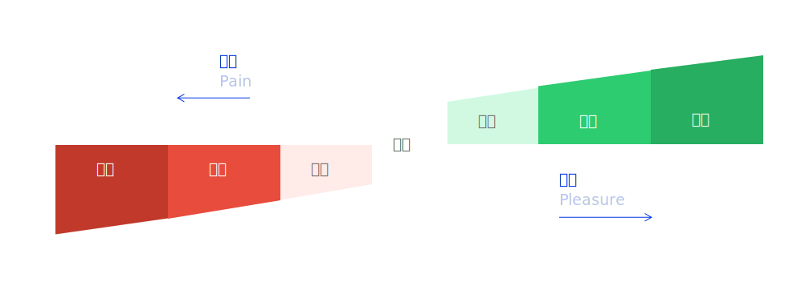
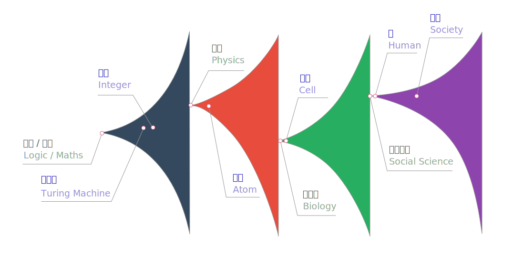
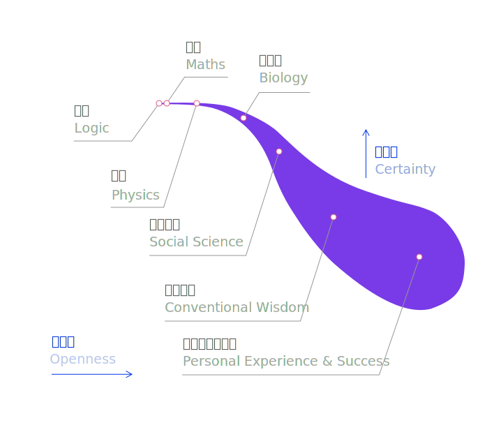

2014年02月22日 - 2014年10月22日 第一稿，即《自然而然》
2018年07月28日 - 2019年07月28日 第二稿
TODO:
尽可能一个解决问题，大量的使用三点，没办法了用五，最多不超过九条
什么是世界运转的方式？什么是数学的本质？
无处不在的光谱图，正态分步曲线
如何问恰当的问题？或者说能问出什么样恰当的问题？
如何解决问题？
近距，局域(短期，短视)，这两个概念等同，且至关重要, we only solve the problem in pixel, not in a picture.
解决问题是生活的本质
减少痛苦和升级享乐是经济和社会发展的本质和驱动力
Pain and nervous (scare) are there for growth.
不要抱怨，不要找别人的错误和理由，因为那是非常简单的行为。
欲小利则大事不成
和他人对比，在乎别人的看法，让自己变得懒惰和懦弱，承认自己无能又如何呢？承认自己差劲做事慢水平低能力弱，不是什么问题。同龄人早早成功也不是问题，问题是你能否达到你的目标，别人的成功能否给你带来借鉴和激励。人是可以提高和改变的，通过学习和训练，而不是固定不变的。
尽可能的明确和量化问题，就是在提高解决问题的效率和准确率。
为了一个更加尽兴和充分的人生，为了一个更加满意和出色的人格，所以才这么做
人们或许会质疑我，因为我只是给了一个假说，而不是靠谱的证明。我所做的只能是在我能力范围内做到最好，既因为，我能力有限，也因为这种模糊在我可以接受的范围内，或许也应该在很多人的模糊范围之内。再或者，文章中零星的想法有很好的刺激作用，只要能体现出价值，我没有理由不把它贴出来。
外界输入 - 感知 - 刺激了listener - 本能反应 / 有意反应 - 需求 / 欲望 / 恐惧 - 问题设定 - 利用已有知识和模型，解决问题 - 制定计划 - 行动 - 进展 - 外界反馈 （重新作为输入）
想得到的 - 能得到的（努力前） - 该能到的（努力后） - 你真正得到的
你想得到什么，和你的生理年龄，社会规范，以及自己的知识水平直接相关
你能得到什么，主要取决于你的运气，知识的视野，思考问题解决问题的能力直接相关
你该得到什么，就是基于你的模型，和你的行动之后所得该的到，但是因为有强盗和诈骗的存在，你该得到的总是小于你真正得到的
生活就是一个发现问题，解决问题的过程。
欲望
工作的定义：给他人解决问题的行为。
享乐的定义：给自己解决问题的行为。
解决自己的问题回报有限，解决他人的问题，你就能换来他人对你的问题的解决。
所谓问题，就是痛苦的减少和享乐的升级。
平衡就是，你自己的力量非常有限，之所以生活如此优越是别人的痛苦解决问题的结果。
如果你的付出少于别人的给予，你没有理由活的不糟糕
我们曾经拥有的固有理念是，赚钱才能活命，这里的理念是，你只有替别人解决问题，你才能要求别人给你解决问题。
满足他人的某种需求和欲望，本身就是在解决一个问题，只不过这个问题比较隐蔽，需要你去探索。
难题就是你想得到的，和你最后得到的之间的差值。有时候，你既希望自己得到a，又想得到b，但是a的得到带来了b的损失。
生命的充分，和你所解决的问题是成正比的，如果你没有解决一个充分的难题，那么很难想象为什么你可以拥有一个独特的人生。
所谓时势造英雄，就是在那样的设置之下，所谓机会，就是特定的问题出现了，需要有人去解决，而不是任何时候，任何情况下这种问题都会出现
但每个时代，每个情景之下都有足够让你闹心的问题，有值得挑战的问题，
金币，钱币，幸福币
自私不是坏事，但是贪婪是坏事。一个人的无私，换来的可能是另一个人的贪婪。
What's the problem and how to solve it?
在不损伤长远利益的情况下，尽情任性的享受生活。
what's the problem and condition, and what's the solution to solve it?
Set a bold but realistic goal.
问题的困难总是在局域和全局中转换，同时我们又总是在确定和不确定性中赌博。
解决了别人的问题，你就可以获得回报，表现形式可以是有形的金钱，也可能是无形的尊敬和生活品质的提高，以及自身的成就感和自我价值感。
你没有解决别人的问题，反而增加了别人的痛苦，降低了别人的生活品质，（例如，强奸、抢劫、贪污），那么你就要承担受到社会给你的潜在惩罚。
直面痛苦，痛苦是让你成长的石头。
人生的行为大致可以分为四类：制定目标，解决问题，执行计划，反思学习。
Goal Setting. (有意识)
欲小利则大事不成
Problem Solving.
人言 - 统计 - 模型 - 推演
近距 - 连接 - 抽象
Taking Action.
想做不该做的，坚决不做；该做不想做的，坚决去做。
Reflecting & Learning.
Be a hyperrealist.
Spend money like solving a math problems.
Spend time like spending money.
高标准，高要求的好办法是what if，想象出一个能够激发你高标准的场景或者环境，而不是局域的快乐
生存与体验：Basic Needs - Standard Living Style - Premium Living Style - Do things you love
挑战与成功：Do things a little bit challenging - Do things quite challenging - Do things innovative - Do things great - Do things Revolutionary.

intensity of desire，需求的欲望强度和恐惧强度。一个人的价值观，智力水平和知识储备影响着他的需求
食物 / 水 / 住所 / 衣服 / 上网 / 通讯 / 出行
房子 / 车 / 子女教育 / 养老 / 大病医疗 / 旅游
高档消费：豪宅 / 跑车 / 雇佣 / 性 / 特权
提前享受：院线电影与下载到电脑，比别人快一步享受的到
社会总想给你分个高低尊卑，好像没了这个大家活着就没奔头了似的。
每个人想要的或许都不一样，但是有许多是一样的。
每个人想要的都要让别人帮助你解决问题，那么在这之前，你就要学会如何帮助别人解决问题。
即使欲望满足与长期目标之间的矛盾，个人成长与自律痛苦之间的矛盾，残酷现实和他人鄙夷与个人目标实现的矛盾
痛苦是进步的阶梯，是成功难以避免的捷径。
生活是解决问题，而不是产生问题。你不去解决问题，你就会创造问题，创造问题就会得到惩罚。
你想做的和你要做的是冲突的，单一长期目标的实现需要大量短期欲望的抛弃。这也是一场交易，愿者上钩。
人生的广度与深度就是在不断的放弃欲望和挑战自我中前进的。
而且只有一个捷径，那就是做一件让你极度兴奋的事情，就好比打了麻醉剂一样无视痛苦。
做你该做的，而不是想做的，这是一个非常重要的技能。
cravings 是一个非常强烈的局域反射。也就是之前说的强烈的chunk。
为什么不吸毒？为什么上学的时候要少打游戏？为什么有钱了少提前消费？他们的道理是一样的？
You will be the rat on the wheel.
见小利则大事不成，为有牺牲多壮志，人无远虑，必有近忧。
有些大事小利好区分，有一些大事小利不好区分。
吸毒不吸毒好区分，小时候打游戏不学习只有家长知道帮我们区分。
抽烟，甜食，酗酒，毒品，健身，提前消费。
Easy fun and not solving other people's problems.
重复性的享受，不解决问题的享受，明显有害的享受（近距局域）
自己的大脑和行动，像算法一样运行，现在是小利还是大事，
欲小利则大事不成，人生只有一次，精彩不精彩，尽兴不尽兴，就看一个人关心的是眼前温馨中的小甜食，还是远处荒野里的大风景。
没有正事，就是指没有在解决他在解决的问题。
cravings vs goals
人生最值得经受的痛苦，就是解决复杂问题而不得结论的痛苦。
emotions over facts
世界的本质是决定性的、是必然的，但因为世界中的现象，对我们而言具有不可缩减的计算性，从而导致了信息的缺失，对我们而言，世界总是偶然的、统计性的。
知识的层级：逻辑数学 - 自然科学 - 社会科学 - 社会规范 - 个人体验与成功

靠谱程度 / 可信程度 逐步降低，灵活程度逐步增加

客观准确的认识世界和未来是至关重要的。客观就是要避免个人自卑自恋的影响，避免朋友家人对你的灌输，避免自己局域现象的肤浅归纳和探索。
静态的逻辑模型 - 基于模型可以问询的问题 - 如何解决问题
逻辑模型 - 可以问的问题 - 如何解决问题
这一节乃是我终生所好奇探寻之处，也是最难最为关键之处，从而这个地方的假设最多，跳跃最多，只能带着疑惑，集邮一样的去阐释
概率分布的概念，这一段要对实际生活有很大的关联。尤其要强调的是：概率只是特定的模型，随着模型的明确和干扰，概率随之改变（而不是摸黑
逻辑的本质决定了如何构建问题，也决定了如何解决问题。
人言 - 统计 - 模型（因果）- 纯逻辑推演
人言：迷信, 社会规范
统计：
模型（因果）：
不偏不倚的艺术直觉，敏锐洞察的独特视角; 不自觉地前提假设（presumption），不自觉地抽象模拟
什么是事实？什么是物理学？科学的方式是什么？数学与科学的区别和联系是什么？为什么说迷信与宗教是被淘汰的理论？
一个被事实验证的假设，看看它能够产生出什么图样，从复杂的结构中，找到这些图样里的规律性结论。
科学家(mutiple layers) model builder；pattern explorer; pattern connector;
复杂程度的增加，逐步的提高规模scale，近似与整体法建模
数学对象 - 原子 （物理）- 分子（化学）- 细胞 （生物学）- 生命体（进化论） - 人（医学）- 社会
在这里引入，静态 - 规律 - 复杂 - 混乱 的四个层级，一个渐进的理论
First Principles - Essential Skills - Professional Works - Creative Masterpiece
基于《Thinking fast and slow》，《Sapiens》
基因的存留为的是那一代人的存亡
定义了一个人作为数学对象的依据
人如何本能的应对世界
如何开启了文明与文明的进化
和他人比较，在乎别人的看法
害怕犯错，恐惧失败
不能延迟即使欲望，不愿走出舒服区
每个人的本能都是被局限在局域之内。非常浅显的思考能力，只能通过自己周围的情况作出判断，只能通过近期的情况作出判断，只能通过近期的欲望做出选择，总是服从于及时的欲望满足，而难以去追逐更高更远的愿望。
这一节所描述的就是社会科学中的关键思维跳跃
所谓文明的进化，对于主体来讲，是痛苦的减少和享乐的升级。
对于整体而言，文明的进化，主要体现在智力的进化，对世界认识水平的提高，以及对自然应用改造能力的提升。
什么是生产力？什么是生产效率？什么是享乐？什么是牺牲？
让人痛苦的问题，和如何让人更加享乐的解决方案，是经济中的矿产，挖的越多，金币越多。
学习和解决问题，是令人痛苦的，但这些短暂的痛苦，换来的是更加丰厚的回报。
什么是借贷？什么是享乐升级？什么是享乐消费？什么是服务业？什么是懒惰？什么是中间产业？什么是雇佣？什么是压迫？什么是抢劫？
获取金钱（显性）或者享受（隐形）的方式有三种：1，解决问题，2，运气好，3，抢劫（暴力形式）
价格的定义只因为局部稀有性和局部需求强烈程度。
经济行为的变量：scarcity and intensity。经济交易的是欲望，控制欲望价格的是局域的稀有度以及局域的欲望强度。需求欲望恐惧是一个被智力水平，认知水平，体验程度所左右的变量。我们假设所有人在没有限制的条件下都是贪婪的享乐者和掠夺者。理性程度也决定了欲望强度对价格的影响。
发明家，提高生产力与享乐升级
奴隶，为了基本需求和基本享乐干活的
强盗，提供的价值明显少于获得的价值（潜在贪婪）
债主，金融投资者，租赁生产资料的人（潜在贪婪）
警察，控制强盗行为的人（潜在的强盗）
自由人，为了个人爱好以及挑战而生存的人
I，个人，对己最有利，传导最快
II，社交，对朋友圈，对家族最有利，对近距的利益体最有利，传导直接
III，社会，对社会群体最有利，传导间接最慢，但同样是生存成本和体验丰富度的制约条件
I，奖励发明家，提高生产率
天才是随机出现在社会上的，而获得更多成长资源的人却集中在少数人手上。
II，减少奴役，增加自由人比例
III，选择智慧的人作为警察，逐步算法化警察
IV，惩罚强盗，贬损道德贼（social）和盗国贼（society）
V，防止警察变成强盗
VI，防止债主变成强盗
VII，增加多元化，追求高分辨率的社会（基于人才的随机分布）
VIII，减少贫富差距和阶层冲突（基于贪婪 / 反抗的本性）
成功意味着低概率且高挑战的目标达成
社会规范就像是餐馆提供的一个套餐，不用思考，服从大众的一个套餐，但人生有千姿百态，每个人的口味都不尽相同
社会规范就像是一个设定好的闯关游戏，为了解锁下一关，你必须完成以下的几个任务。如果你达到了这样几个事情，就给你解锁一个成就，一个金光闪闪的成就。
名望就像泡沫经济中的房价，看似坚挺，实则虚幻。
每一个伟人都是社会规范和权威的挑战者，每一个伟大的人都是发明家和创业者
没有意义，如同问勤奋的颜色，并且要放在一个时间和空间的全局角度去理解，而不仅仅是局域的欲望
人生说到底是个人欲望和个人所得的平衡问题。
在没有明确存在的定义前，这个问题也没意义。同时，坚信我们是逻辑现象和数学对象，并且是物理学原理反复执行的结果对我们每个人都有好处
时间的历史链条；空间的大小对比
1898年我太爷出生，1977年我太爷去世，1932年我奶出生，2010年我奶去世，1964年我父亲出生，1989年我出生
我太爷经历了清朝的覆灭，日本占领东北，共和国成立，人民公社，大跃进和文革。
我太爷和周恩来，刘少奇，彭德怀等人同岁，但我太爷活的年龄最大，活到了79岁。
出生那年，爱因斯坦19岁，毛泽东7岁，百日维新带来了谭嗣同的死，而达尔文去世相对于我太爷出生，相当于毛泽东去世于我。
我奶出生的时候，正是伪滿洲國成立当年，而我奶正出生与东北，我奶出生那年图灵还没有提出图灵机，而她去世的那年苹果出了iPhone 4。
我出生前三周，《宋飞正传》的第一集播映。
真正的人生开始于高中结束，大学开始
Ordinary people merely think how they shall spend their time, a man of talent tries to use it.
什么是挥霍？什么是利用？用来干什么？对于一个尚未觉醒的人，他是难以感知到世界的用意的，他始终认为世界就是一次本能反射加上一些简单的逻辑思考，是如何混日子？
一个尚未觉醒的人，驱动力更多是本能，而不是思考。是服从，而不是独立。是混日子，而不是完成愿望。
过分的娱乐就是对人生长远愿望的损伤。
live free，live cool
每个人有自己的选择权，没有绝对的标准
奴隶变成了奴才，奴才变为心奴，为了维护体制，而自戳双眼
更好的奴隶：职场阶梯；丰富简历，变成稀有资源
雇员和个体经营（创新个体经营），雇主（大公司）和投资人
打游戏还是好好学习；提前消费还是节俭投资；及时享乐还是居安思危；
吃喝，居室，出行，衣服，健康（生存需要）
性，婚姻，子女（繁衍需要）
通讯，社交活动，竞技（社交需要）
书籍，影视，音乐，旅游（猎奇需要 / 求知欲 / 体验）
挑战，创新（创造需要 / 自我突破）
常规人生。
miserable disatified painful unfulfilled
pay too much for the safety and security（the bait）
the bait and the whip: looking good is the bait，even though that‘s not the goal
鱼饵是简单稳定舒服安全享乐的生活，鞭子是别人的看法 / 鄙视链 / 被洗脑了的对世界的误解
统治阶级的贪婪，最好的办法就是编织一个错误的世界观，让每个人都安心做一个普通的奴隶.但这样的体系是没有潜力的，需要那些发明家出来，改善生活
暴力手段是肮脏但有效的，不过暴力引来新的暴力，是双输而不是双赢
fear is the trap
今天吃好吃的，明天还是这些。今天刷一个综艺节目，明天还是这些。今天
读书思考，才能让一个人独立，否则他只是他身边环境的一个复制品。
重复的体验还不如不活着。没有理想的生活就是一条咸鱼。Fun Easy & Repetitive. Pain Challenging & Fresh.
为什么要活的这么累？为了更加自由和精彩的一生。接受挑战才能有体验，如果是轻松达到，只不过是一种稀有资源的享受而已。
为什么要不断的成长？为了一个更加宽广和深刻的人生体验。为什么要不断的挑战自我？为了能够解决更多的问题，为了求知欲的满足，为了一个好胜的心态。
人生只有一次，如果我总是在那些重复的、单调的、无趣的享乐中去生活，活着是不是变太局限了？
短期一般要付出更大的代价，因为你和很多人一样再抢稀缺资源；被动一般也要付出很大的代价，因为你的局部需求欲望在放大。
Good habits are hard to form and easy to live with. Bad habits are easy to form and hard to live with. Pay attention. Be aware . If we don't consciously form good ones, we will unconsciously form bad ones.
为了理解教育的意义，我们就要知道教育的后果
主要的愚昧例子是：活人祭祀，童男童女殉葬。问题是不解决问题，但是消耗了人类的生命。注入水银防腐
生活的痛苦，来自于对世界错误的或是无能的趋势判断。
教育的本质是什么？提高解决问题的能力。
正规教育，尤其是在中学教育，主要是传授一些通用的知识和技能，最为常见的技巧和规律。
正规教育，偏向的是学术培养，也就是希望学生能在学术上有所成就，但并不是每个人都要成为一名学者。
正规教育，在高等教育阶段，是对专才的培养，但是很多人对自己的爱好，仍然不知所然，专才有时是对个人意志的抹杀。
正规教育，所缺失的，是对财富的基本教育，对解决日常生活中高频率出现问题的教育。
三人行，则必有我师。每个人对世界的加载方向不同，他看到的所抽象的世界和我们是不一样的，而这些都是我们需要借助别人的经历才能习得的，而不是仅仅通过自己狭隘的眼光。
读书，是和人交流的最好媒介。
犯错是学习的必经之路，没有犯错就是没有在学习。如果一个文化里没有鼓励犯错的习惯，那么这个文化就是一个不崇尚进步的文化，所谓不崇尚进步，就是不解决问题，回避问题，采用保守低效的解决方案，压抑发明家的创作欲望以及挑战动力。
一个落后的文化，就是让你停止并且错误的认识世界，不鼓励人进行思考和创新，不让人去解决每个人遇到的问题，而是为了满足统治者的一己私利。
失败是学习的捷径，虽然我们要尽可能去避免，但尽可能去避免的同时，也尽可能的去追逐，如此，才能加速提高自己解决问题的能力，提高对世界的认知。
学习的难度在于概念的飞跃，但是学校教育中对人性，对财富，对创造价值是缺失的。
正规教育是如何毁掉一部分好学生的
1，填鸭式教育（尤其数理教育）导致的盲从和凡事套路化
2，社会对排名和名校的迷信，导致的高傲和高人一等的幻觉
3，偏学术和职业的教育，导致的职业迷失与多元化的丧失
正规教育是如何毁掉一部分差生的
1，社会对排名和名校的迷信，导致自信心的挫败
复利模型（至关重要）：无论是学习还是工作。复利（钱滚钱）的概念是一个非常重要的数学模型。
The more you know, the more you learn; the more you learn, the more you can do; the more you can do, the more the opportunity
变相的奴役：打游戏还是好好学习（车贷、信用卡、婚礼的骗局）；抹杀对稀有资源的竞争能力，让其没有翻身可能，提前享受就是慢性自杀
第一个级别的类比，如果在农耕时代，春天来临，有人劝你去春游而不是耕地，那么你享受了春游的快乐，但是丧失了秋天的收成，很可能饿死。
第二个级别的类比，如果在学生时代，尤其是高三，有人劝你不要学习而是去打游戏，那么你确实是享受了一时游戏的快乐，但是找工作的时候，你可能就要受到很大的限制。从而限制了你的想象力。
第三个级别的类比，如果在年轻时代，提前贷款买车买房，提前享受和不是节俭投资，那么在中年时，就会出现难以翻盘的危机。少壮不努力，老大徒伤悲。
上述这三个类比，提前所得到的享受，一般都是那种简单、愉悦和重复的享受，属于越享受越无趣的。
怎么才能赚钱？给别人解决问题就是赚钱。
如果我有时间，应该建立一个模型，享乐的模型，来用一个曲线表达这种享乐所带来的曲线积累图。
当然也要知道，我们必须娱乐，而不是苦行僧，否则就成了傻子了，
时间就是你的资产，如何进行恰当的资产配置，会影响你的长远产出。
只要你认可你上学的时候，有人哄骗你说，别学习了，打游戏吧，这是在害你，那么，贷款提前消费，斥巨资举办婚礼便都是同样的骗局
如何进行财富积累从而实现财富自由？
创造价值的意思，就是解决别人的痛苦和问题，升级享乐程度
直接制造财富（创业）的思路：1，找到需求和痛点或者升级享乐程度，2，标准化解决方案，提高可复制性，3，完善解决方案，工匠精神
痛苦是摸得着看得见的，人们很容易意识到；但是享乐升级需要一个有预见的人，他知道这样做是有利于享乐的。
解决痛苦只是第一步，享乐升级是革命，新的形式带来了更大的爆发力，扩大了普及面，提高了社会的新的复杂度，上了新的层级，让事物成几何倍数增长，享乐升级是爆发的新基础。（苹果手机）
人穷志短，如果没有足够的资金储备，如何才能实现财富上的提升呢？知识，眼界，思考问题的方式和能力。
Increase the goal achieving possibility and efficiency
satisfies the curiosity especially easing the existential crisis
A buring desire to reach your goal.
Learning Solving Achieving
如果你的目标是为了钱，那么不赚钱就应该转向。如果你的目标是要创业成功一次，那么一个项目没有好的苗头就应该转向。如果你的目标是解决一个具体问题，比如登上火星，那么没有登上火星之前你就不应该转向。
批判性思维，建模模拟思维，渐进模型，统计学思维
因果判断，不自觉地抽象过程，不自觉的模拟过程
science is rigid but people are flexible
consider everything as a machine
过于书本化，主要体现在日常生活层面，统计学的失效
Higher the risk， higher the knowledge you need
抽象能力
奴隶变成了奴才，为了维护体制，而自戳双眼
更好的奴隶：职场阶梯；丰富简历，变成稀有资源
战略为大，战术为小；战略求稳，战术求变。
在最后一代人的眼里，世界是非常恐怖的，一个错误的决定，一个脱离了稳态，脱离了安全感，便是意味着死亡的风险。
从而那些特立独行的人，成了疯子。但21世纪不是这样的，21世纪是一个充满机遇和安全感的世界，世界也不再那么恐惧。
真正让人恐惧的不再是死亡和吃不上饭，也渐渐不是他人的欺辱和强权，而是与他人对比的落差，是他人对你鄙夷的看法，是难堪和嘲讽。
而他人的看法是假设的，也不那么容易就饿死，生存的途径有很多条，方式有很多样，但大多数人的路线却只有一条。那就是活在坑里。
和他人对比和在乎他人看法，是最大的噪音，让你远离个人目标的障碍
Ego - learning - solving - achieving - values - what we want
每个人都有自己独特之处，我们不宜强求每个人都追逐同样的梦想
没人真心的在乎你，每个人都是相对自私和贪婪地，他对你的鄙视只存在几分钟，然后他就去寻找自己的意义去了。
铭记你自己的目标和理想，而不是别人的目标和理想，追逐自己真心所向往的生活和目的地，享受过程，不断学习，不断犯错。
饿不死，有地方住，有衣服穿，人就是自由的。有人爱，身体健康，子女得到教育，就是幸福的。
自由是最好的财富。自由为首，酷字当先。
Coolness to me is the higest pleasure in life.
Delay the Instant Gratification.
人和人在天赋上是不公平的，若是你聪明绝顶，那就装的容易犯错；若是你资质平平，那就全力以赴，发挥自己的潜能。
不要嫉妒别人的成功，别人的成功可能意味着更多人生活的便利和质量升级，意味着世界在变得的越来越好，享乐的成本变得越来越低。
不要因他人的成功而沮丧，而因为他人的成功而庆幸，又一个可以学习的对象，又一个鲜活的榜样，世界上需要解决的问题还有许多，积累准备，不断进取。
个体的成功和熵值一样，局域或存在着成王败寇，但对整体总是双赢的。
讨好他人，不愿意打扰别人，FOMO，别人的眼光和看法。
自己的生活还是别人的生活。
If you believe too much you'll never notice the flaws; if you doubt too much you won't get started.
One step at a time. Break it down to pieces. Keep cracking.
多和自己的及时欲望说不，多和
着火的时候是坐那里哭呢，还是找水灭火呢？
“Don’t waste time being depressed.”
此处加入马丁路德金的演讲，加入JFK的登月演讲
为了生计而被迫奔波的奴隶，充满压迫和剥削的债主，当着警察（裁判）的强盗
我们必须满怀恶意的去看待统治者，他是否自恋、自私、贪婪、称职。
过大的权利会改变他的性格，充分的监督会让他恢复本职。
这些都是人作为一个数学对象，所体现出的统计属性。
这个社会上有太多的人，生活的非常痛苦和难受，或者压抑和不快，社会的不公平，强盗横行，阶层固化，工作无聊无趣。
我有一个梦想，我希望世界可以更加开放和自由，我希望世界可以更加公平合理，我希望每一个个体可以做自己喜欢做的事，我希望每个人都是为了自己的梦想而活。
数学的本质就是图灵机，不断抽象，不断加载的一个事实图灵机。
Abstraction layers building. 具象的是容易掌握的，而抽象的是不容易掌握的，但我们要做的就是要不断的满足这种抽象层级。
如何平衡公平的竞争与阶层流动的问题？如何找到生产率提高和工作内容降级的问题？如何提供一个更佳合理的民主制度？
我觉得更像是22世纪的任务